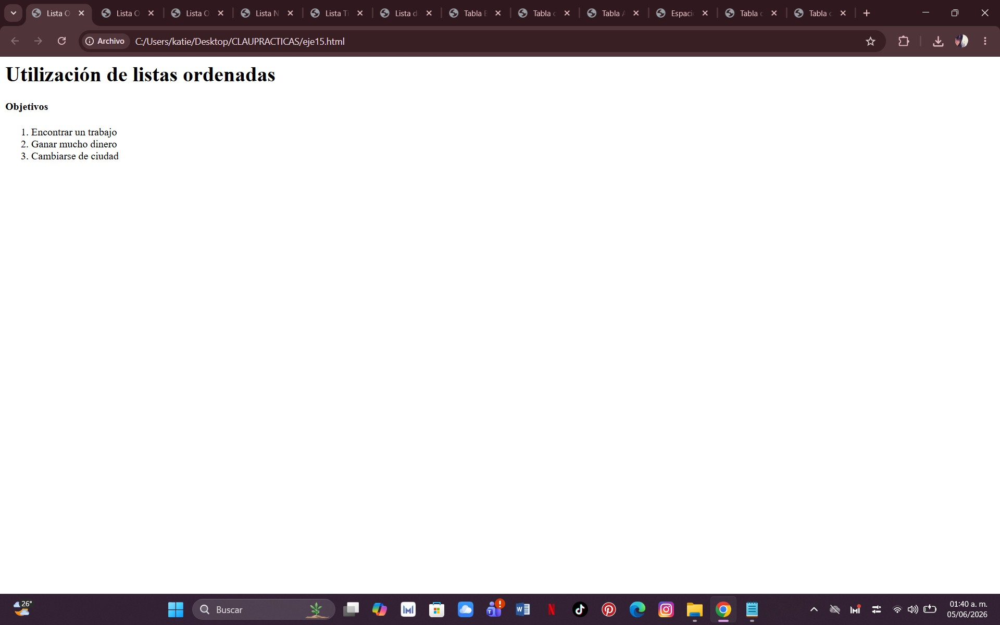
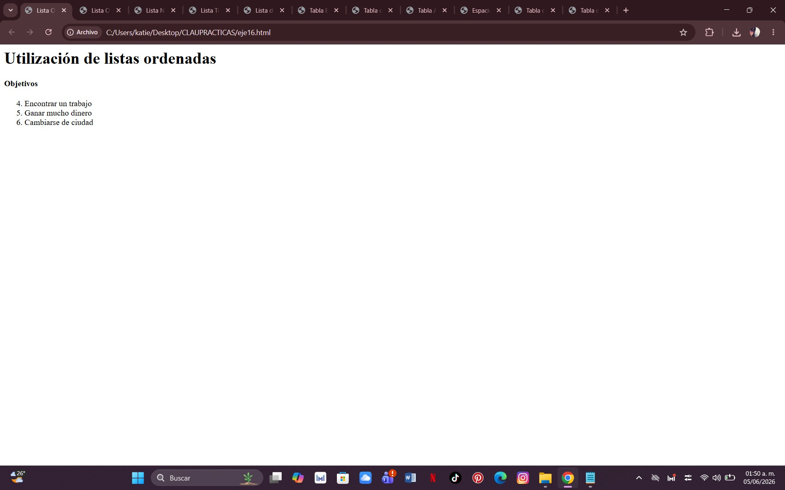
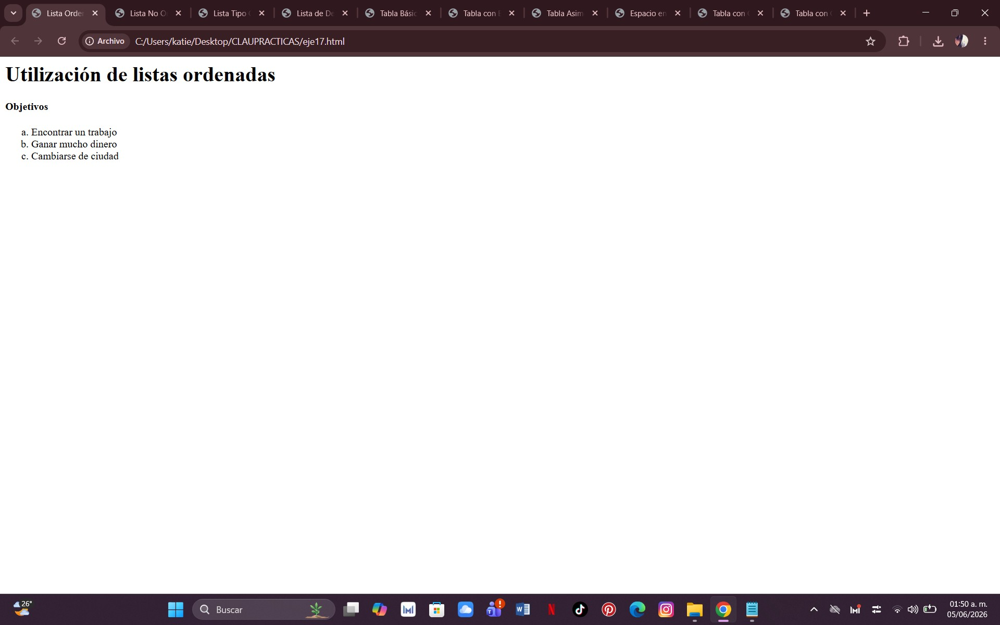
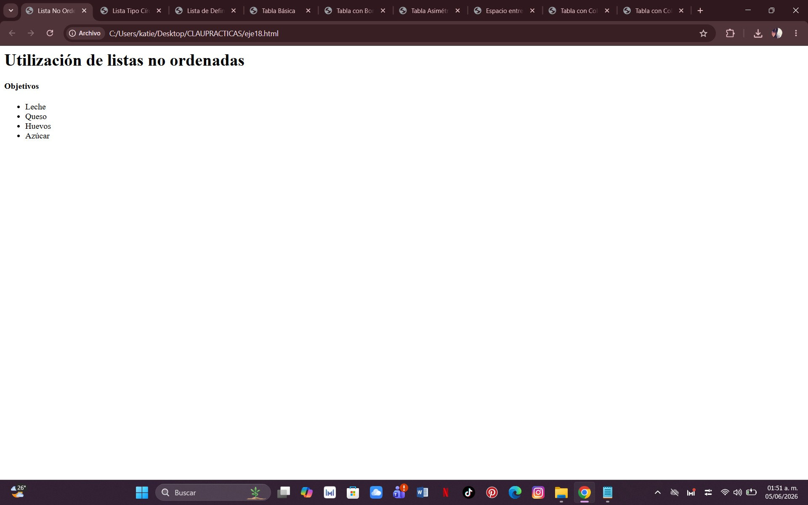
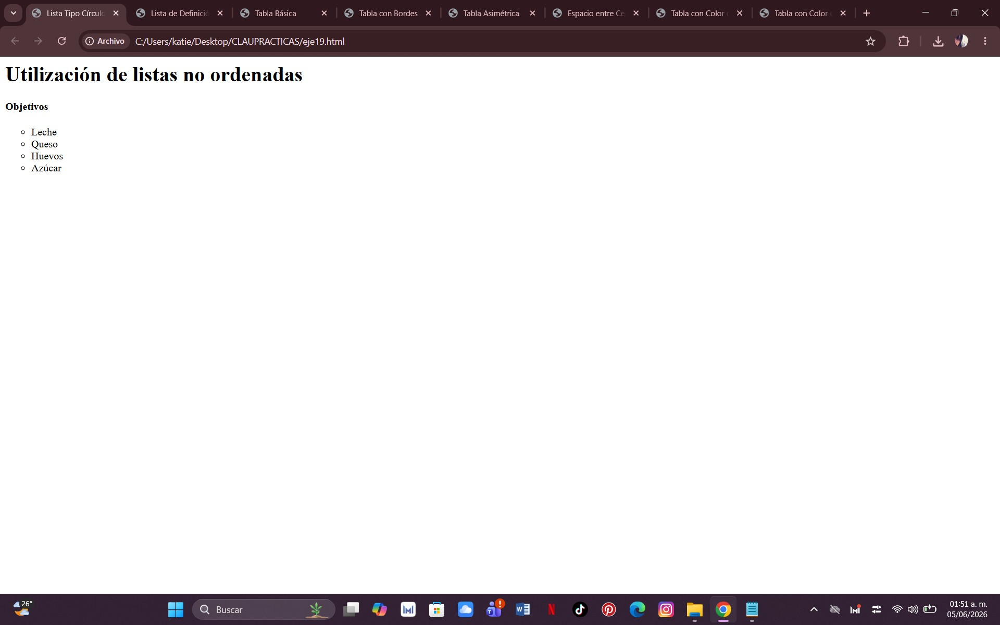
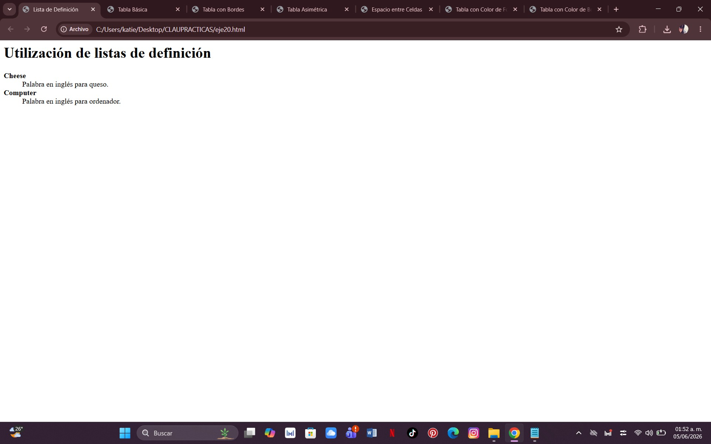

¿Qué se hizo?
Se creó una lista ordenada para mostrar una serie de objetivos numerados automáticamente, que comienza desde un número específico en lugar de iniciar desde el número 1 y utilizando letras en lugar de números.
Comando utilizado:
ol y li
ol start
ol type


¿Qué se hizo?
Se creó una lista con viñetas para mostrar varios elementos y la otra se modificó el estilo de las viñetas para que aparecieran en forma de círculo.
Comando utilizado:
ul y li
ul type

¿Qué se hizo?
Se mostraron palabras y sus significados mediante una lista de definición.
Comando utilizado:
dl, dt y dd